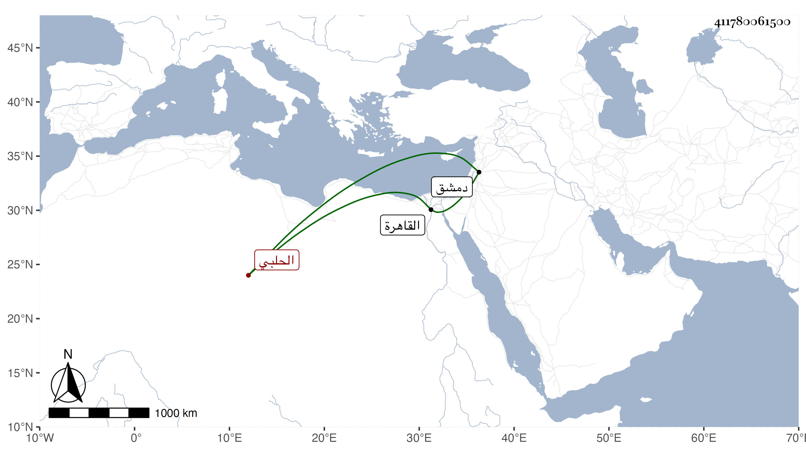

0902Sakhawi.DawLamic.ITO20230111-ara1.EIS1600.411780061500
Biography ID: 411780061500
438
محمد بن الكمال محمد بن عمر بن الحسن بن عمر بن حبيب الحلبي . ولد في سنة ثلاث وخمسين وسبعمائة فيما كتبه بخطه وقال فيما قاله شيخنا أنه سمع أباه واستجيز لولده وغيره في سنة ثلاث وعشرين. قاله شيخنا : ثم قدم القاهرة بعد يسير سنة خمس وهو ممن باشر نقابة الحكم بدمشق في أيام مسعود وكان مظلم الأمر في الشهادة سامحه الله .
